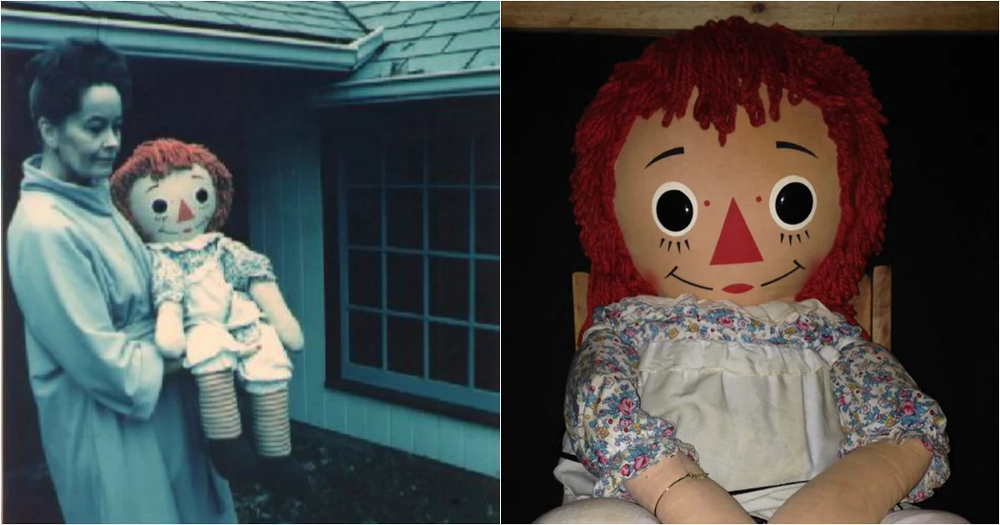
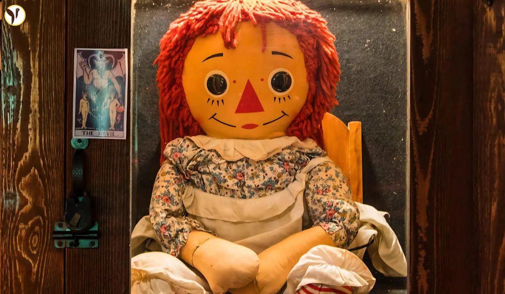

1. Annabelle
O caso de uma boneca de pano Raggedy Ann que, segundo os Warren, estava possuída por uma entidade
demoníaca. A história começa em 1970, quando uma estudante de enfermagem chamada Donna recebeu a
boneca de sua mãe como presente de aniversário.

Donna morava com sua colega de quarto, Angie. Elas logo notaram que a boneca parecia se mover
sozinha pelo apartamento. As moças relataram que a boneca aparecia em diferentes cômodos e em
posições que não a tinham deixado. Eventualmente, encontraram bilhetes escritos em papel pergaminho
com mensagens como "Ajude-nos" ou "Ajude Lou" (Lou era um amigo em comum delas que frequentava a casa).
Antes de chamarem os Warren, as enfermeiras contataram uma médium. Essa médium disse a elas que a boneca estava possuída pelo espírito de uma menina de 7 anos chamada Annabelle Higgins, que havia morrido tragicamente no terreno do prédio. Com pena, as enfermeiras deram "permissão" para o espírito ficar, e a atividade paranormal piorou, tornando-se mais agressiva.
A situação se agravou quando a boneca supostamente atacou Lou, deixando ematômas e arranhões por seu
corpo.
Quando Ed e Lorraine chegaram, eles imediatamente descartaram a história do espírito da menina.
Não era um Espírito Humano, os Warren afirmavam que espíritos humanos não têm o poder de possuir objetos.
Era um Espírito Não-Humano (Demoníaco): Eles determinaram que a boneca estava sendo manipulada por uma entidade demoníaca.
O Objetivo Real: O espírito estava usando a boneca como um "canal" ou "peão". O objetivo final, segundo os Warren, não era possuir a boneca, mas sim possuir uma das enfermeiras.
Considerando a situação perigosa, Ed Warren realizou um rito de bênção (ou exorcismo, dependendo da fonte) no apartamento para limpá-lo da presença.
Eles decidiram que a boneca era um objeto "infestado" e perigoso demais para ser deixado lá.

Os Warren levaram Annabelle para sua casa em Connecticut. No caminho, eles alegaram que a boneca tentou interferir na direção do carro, quase causando um acidente fatal, até que Ed jogou água benta nela.
Para contê-la, eles a trancaram em uma caixa de vidro especial em seu "Museu Oculto". A caixa tem avisos de "Não Abra" e, segundo a tradição do museu, é abençoada por um padre regularmente para manter a entidade sob controle.
2. Amityville
No 13 de novembro de 1974, Ronald DeFeo Jr. de 23 anos assassinou seus pais e seus quatro irmãos
enquanto dormiam. Ele afirmou durante o julgamento ter saido compelido a cometer os crimes por
"vozes" que ouvia na casa.
Em Dezembro de 1975, George e Kathy Lutz e seus três filhos se mudaram para a casa, atraídos pelo
preço baixo, apesar de saberem do massacre. A família relatou ter vivido um pesadelo que durou
28 dias.
Ao contrário do que muitos filmes sugerem, os Warren não investigaram a casa enquanto a família Lutz estava morando lá. Eles foram chamados depois que George e Kathy Lutz fugiram da casa na 112 Ocean Avenue em janeiro de 1976, após os 28 dias.
Os Warren visitaram a casa cerca de dois meses depois que os Lutz saíram. Eles não foram sozinhos; a investigação foi um grande evento de mídia, incluindo repórteres e outros pesquisadores paranormais.
A Constatação de Lorraine Warren
Durante uma sessão espírita realizada na casa, Lorraine Warren teve suas impressões mais fortes.
Ela imediatamente declarou que o problema da casa não era um simples "fantasma". Ela alegou ter sentido uma presença profundamente maligna e demoníaca, que ela descreveu como "o mais perto do inferno" que já esteve.
Lorraine afirmou ter ouvido e sentido a presença de uma banda marcial demoníaca, uma "marcha fúnebre" que, segundo ela, tentava expulsá-la psiquicamente da casa.
Ela compreendeu que essa entidade maligna havia influenciado Ronald DeFeo Jr. a cometer os assassinatos de sua família um ano antes, e que essa mesma entidade atormentava os Lutz.
3. "O Diabo me fez fazer isso"
Em 1981, ocorria o julgamento de Arne Cheyenne Johnson, de 19 anos. Foi a primeira vez na história judicial dos Estados Unidos em que a defesa de um réu tentou formalmente argumentar que o cliente era inocente porque estava sob possessão demoníaca no momento do crime.
A história não começa com Arne, mas com David Glatzel, o irmão de 11 anos da noiva de Arne, Debbie.
A família Glatzel chamou Ed e Lorraine Warren para sua casa, alegando que o jovem David estava sendo atormentado por uma entidade. Ele exibia comportamento violento, falava com vozes estranhas, tinha convulsões e supostamente via um "homem com chifres". Os Warren concluíram que David estava possuído por múltiplas (supostamente 43) entidades demoníacas e, com a permissão da Igreja, realizaram uma série de exorcismos.